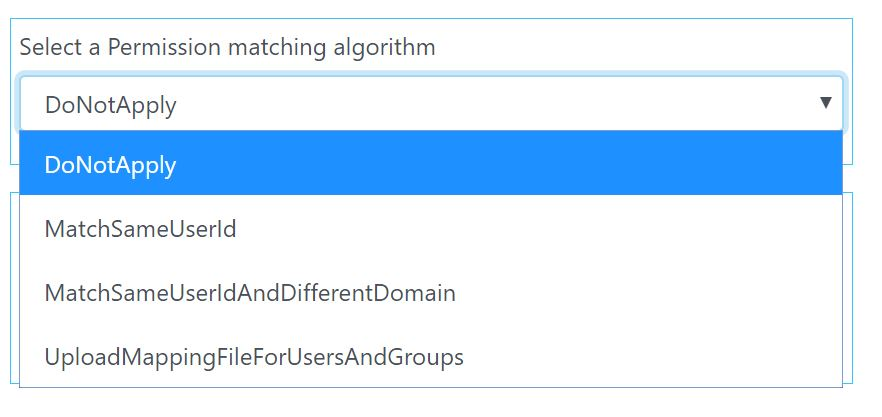
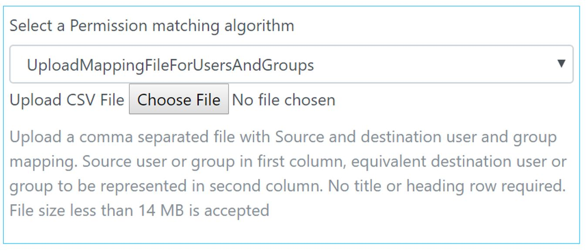
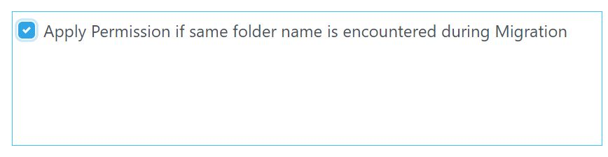

Permission copy happens per below options and users can select them during Migration.
Note: it is required that all users/group with whom permission needs to be shared are already provisioned in destination tenant. This application will not auto provision the users and throws an error if users are not found with whom folders need to be shared.
Example say user1@abc.com shared to edit his/her folder with user2@abc.com in source tenant. In this option when folder is migrated to destination tenant, permission is applied for userB@xyz.com who corresponds to user2 on that folder to edit as well in destination tenant.
Note: Permission mapping does consumes lots of APIs calls both on Destination and Source tenants, hence sometimes it is recommended to do Permission mapping in Second Pass Migration. You can do it by selecting checkbox as in screen below on your second pass migration.

Google to OneDrive: Organizer, Owner, Writer gets converted into Write Permission for OneDrive tenant, rest gets converted into Read permission in OneDrive tenant
Box to OneDrive: Editor, Co-Owner gets converted into Write Permission for OneDrive tenant, rest gets converted into Read permission in OneDrive tenant
In certain cases not all folders need to be migrated for a user, or in cases where a folder reading errored out, only that folder needs to be migrated.
In either destination or source tenant, each folder is represented by a unique Id. Unique ID of a particular folder can be found either from the URL or if you try to share a link of that folder, link of folder will have the unique folder ID of that folder.
If you wish to migrate only one folder from one User to specific folder for same user in destination tenant you can use this option. Enter the unique ID of folder from Source tenant from where contents need to be migrated, also enter the unique ID of destination tenant where contents needs to be migrated. Destination Folder ID serves as root folder ID for location where all contents from Source folder will be migrated, if option of create a new folder was selected for destination migration folder, a new folder at the destination folder ID will be created.
Note: This option can only migrate contents on only one user at a time. Multiple users for migration should not be entered in this case.